Landlord Guide
This guide walks you through everything, one small step at a time. You don't need to know anything about computers or property software already — if you can use WhatsApp, you can use this.
First, let's create your account. It takes about five minutes, and you'll pay a single flat fee — no surprise charges later.
Open estatecopilot.org in your phone or computer's browser, then tap the green List your property button at the top of the page.
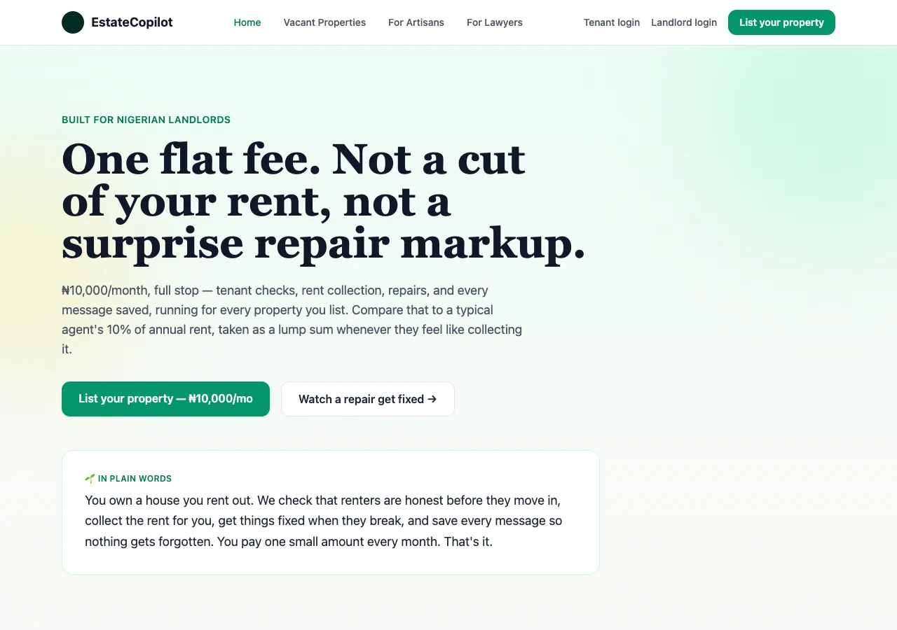
You'll be asked for:
When everything looks right, tap Continue to payment.
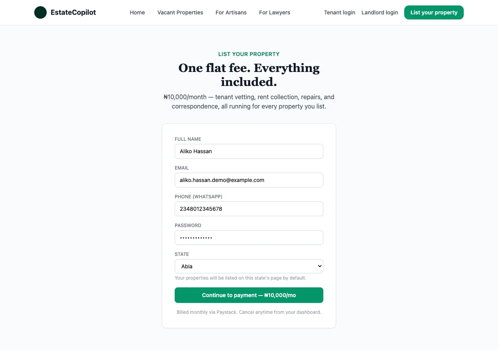
EstateCopilot costs a flat ₦10,000 a month — no matter how many properties you list. You'll be sent to a secure Paystack page to pay. This is the same trusted payment page used by banks and big shops in Nigeria, so it's safe.
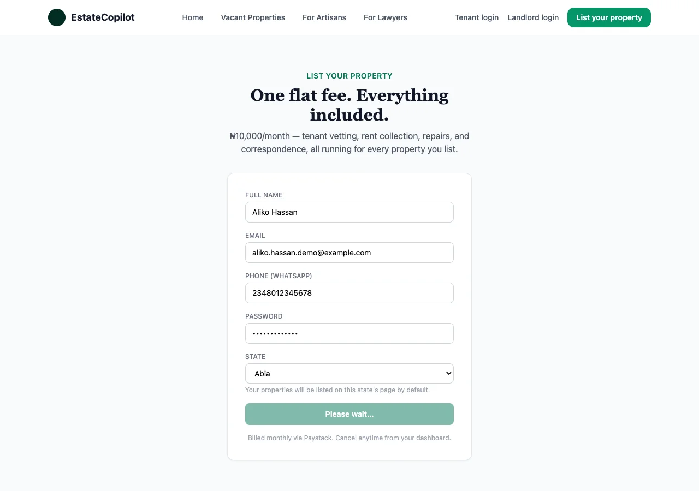
Once your payment clears, our team turns your account on — this usually happens within a few hours. You'll know it's ready when you can log in without seeing a "payment pending" message.
Go to landlord.estatecopilot.org, type in the email and password you chose, and tap Log in. You'll land straight on your Dashboard.
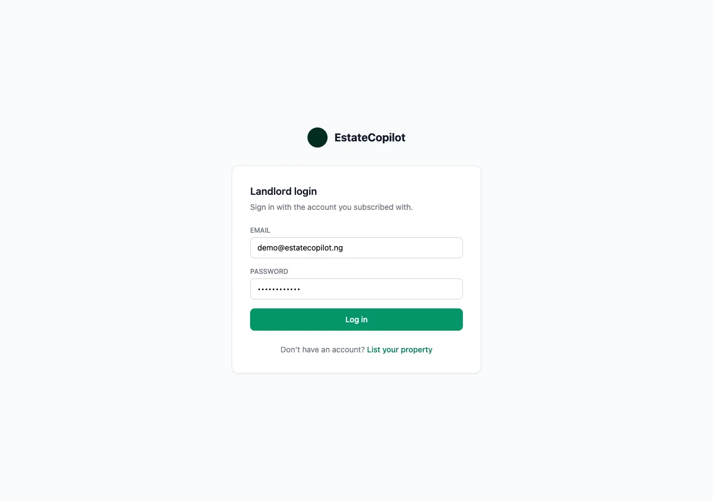
Everything lives in the menu on the left. Here's what each button does — you'll use most of these every week.
Down the left side of your screen you'll see:
| Menu item | What it's for |
|---|---|
| Dashboard | A quick summary of everything at a glance |
| Properties | Add, edit and advertise your properties, and invite tenants |
| Tenancies | Send rent reminders, set payment plans, message a tenant |
| Tenant Vetting | Check a tenant's identity (BVN) before you trust them |
| Finance & Levies | See rent that's come in, and track government levies |
| Maintenance | Repair reports from tenants, and dispatching artisans |
| Legal | Get help from a lawyer for tricky situations |
| Bookings | Viewing requests for vacant units, and repair site-visits |
| AI Inbox | Reply drafts written for you — you approve them before they send |
| Settings | Your bank details and account information |
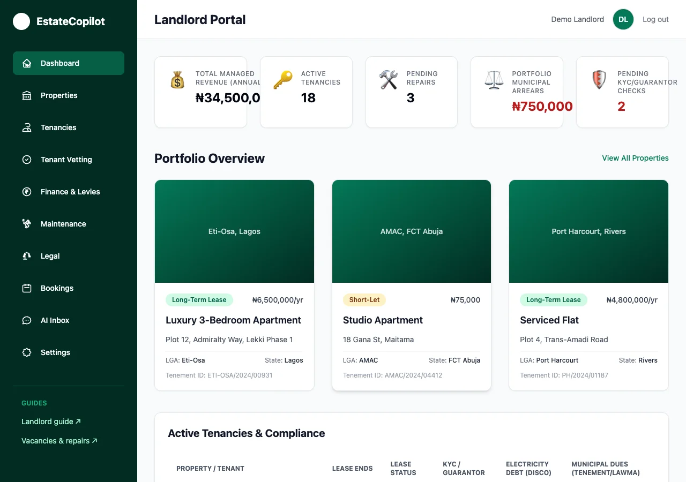
This is what you see first each time you log in — a short summary so you know, at a glance, if anything needs your attention today.
Your name is shown at the top-right of every page. Tap it — or the Log out link beside it — any time you want to sign out, for example if you're using a shared computer.
This is the heart of EstateCopilot. Your tenants can message you the same way they message anyone else — and your copilot helps you reply, without ever sending anything on your behalf without your OK.
Click AI Inbox in the sidebar. You'll see a list of drafted replies, one for each tenant message that's come in.
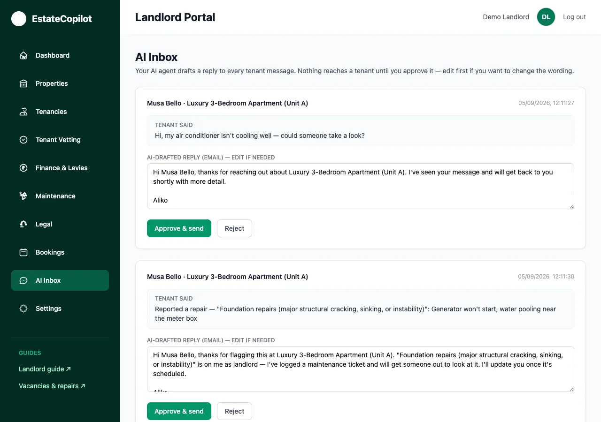
Open a draft to see exactly what the tenant said, and the reply your copilot has written for them in your voice. Read it carefully — you know your tenants and your properties best.
You don't have to wait for a tenant to write first. Open Tenancies, pick a tenant from the list, and tap Send rent reminder — it goes out over WhatsApp right away, and gets logged in that tenant's message history.
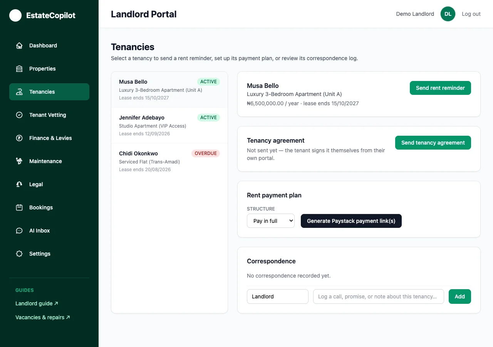
Every message — WhatsApp, email, and reminders — is saved under Correspondence on that tenant's page, in order, so you never lose track of what was said.
Let's get your first property onto the platform.
Click Properties, then Add property. Fill in:
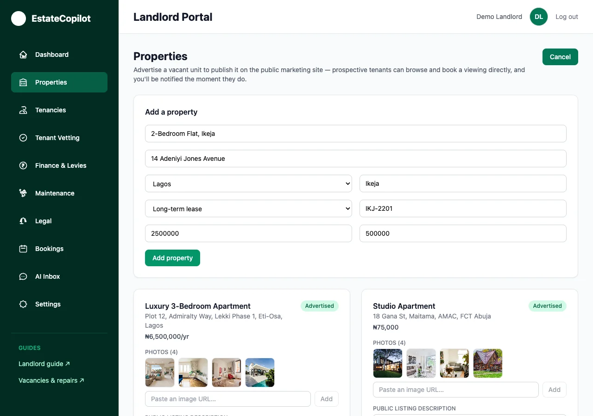
Good photos help a lot if you plan to advertise this unit. Paste in image links, and write a short, honest description of the property.
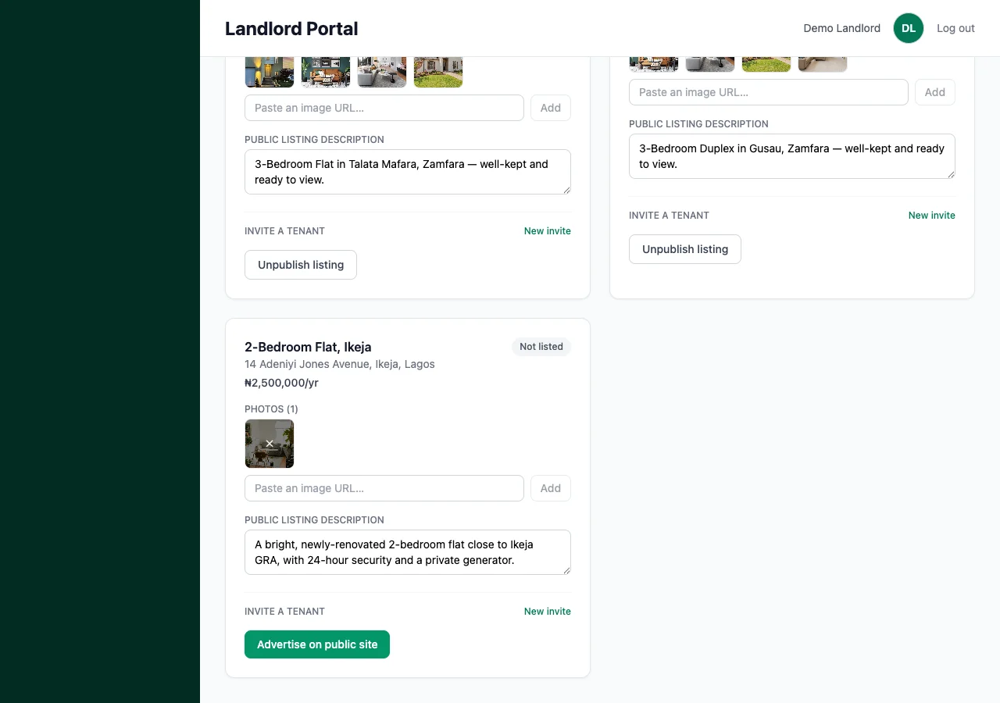
Got a vacant unit? Flip on Advertise on public site and it appears on our public listings page, where anyone can request a viewing. This is covered in full in the Vacancies & Repair Requests guide.
Already have a tenant moving in? Scroll to Invite a tenant on that property's card, enter their name and WhatsApp number, and tap Generate link. Copy the link it gives you and send it to your tenant — this is how they create their own account.
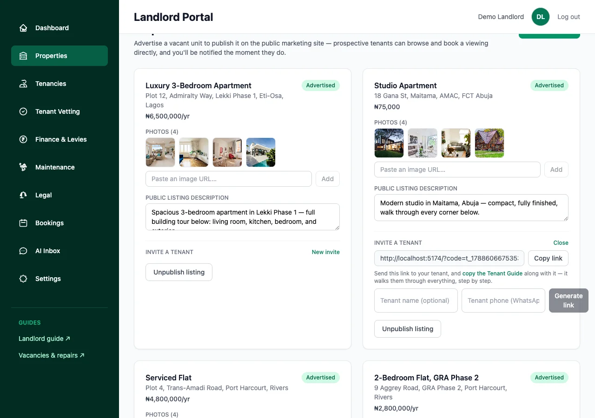
So that rent lands directly in your bank account — not ours — go to Settings and enter your account number and bank. We verify it instantly and every rent payment from then on pays you directly.
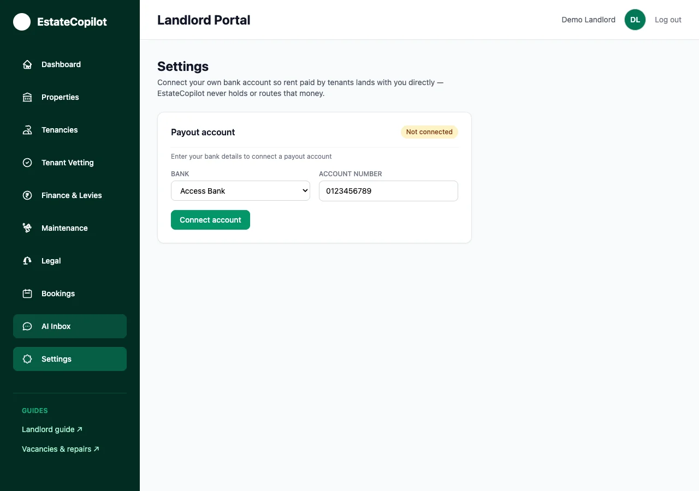
The last piece — how money moves, and how you keep on top of the small jobs every week.
On a tenant's Tenancies page, choose Pay in full or Installments, then tap Generate Paystack payment link(s). Your tenant gets a link (or links) to pay from — every one lands straight in your account.
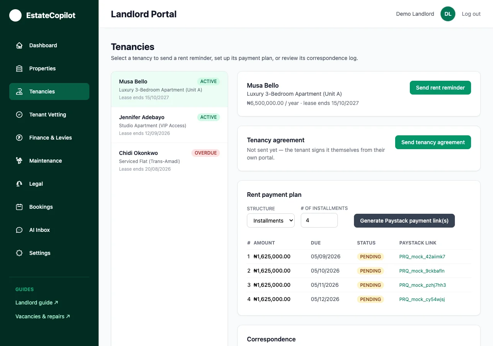
Go to Finance & Levies to see every confirmed payment, who it came from, and which property it's for — always up to date.
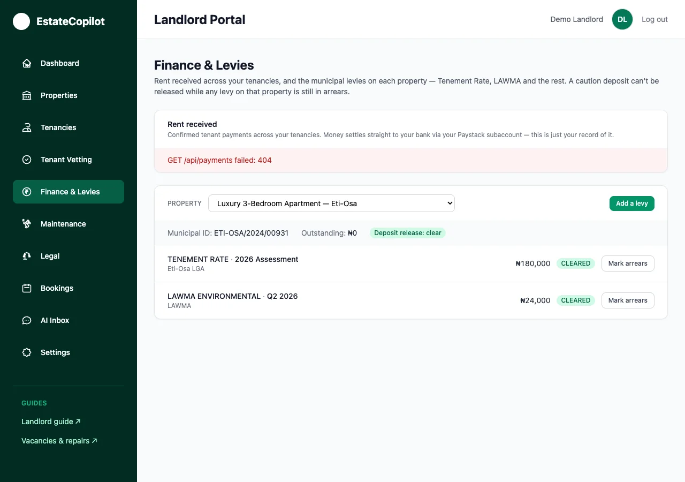
Also in Finance & Levies, log each property's Tenement Rate, LAWMA and similar dues, and mark them cleared once paid. A caution deposit can't be released to a tenant while a levy on that property is still in arrears — this protects you automatically.
When a tenant reports something broken, it appears in Maintenance. Full details — including sending it out to an artisan — are in the Vacancies & Repair Requests guide.
Bookings lists every property-viewing and repair-visit request, grouped by date like a calendar. Tap Confirm or Cancel on each one.
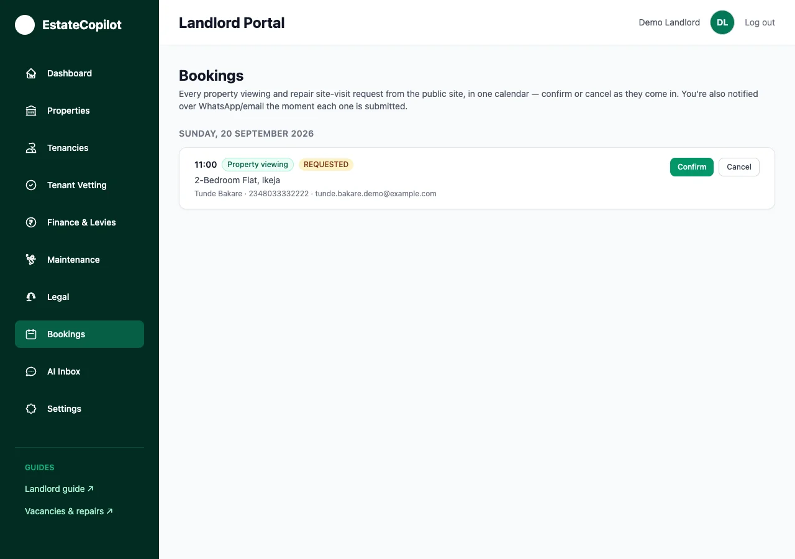
Something outside the everyday — a difficult tenant, a notice-to-quit? Go to Legal and describe the situation. A real lawyer can quote you for the work.